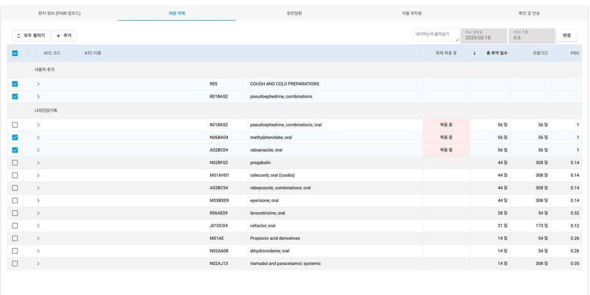
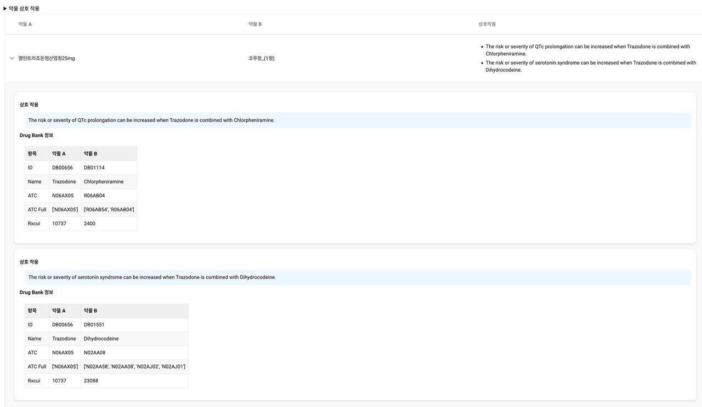
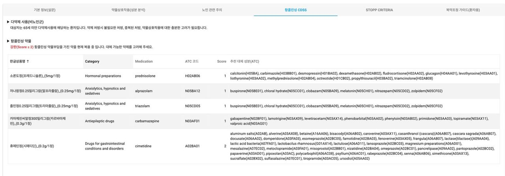
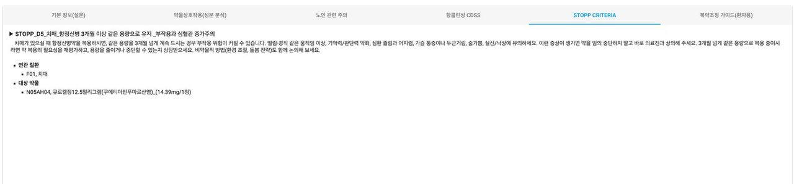
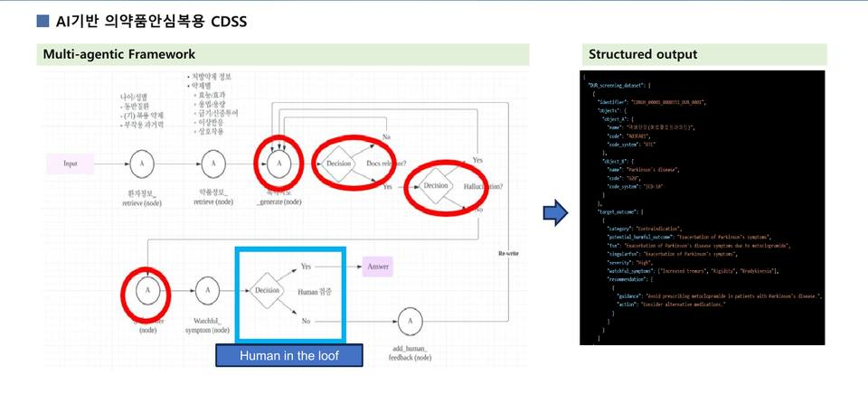
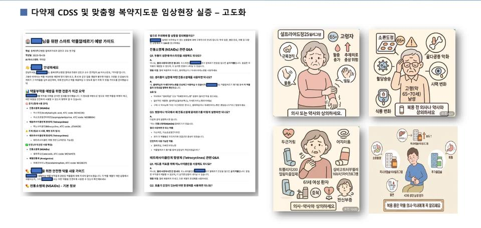

마이데이터 안심복용 CDSS보건복지부 R&D · 2023-2025
보건복지부 마이데이터 활용기술 R&D로 2023년 2월부터 2025년 12월까지 수행한 과제입니다. 강점은 환자 맞춤형 다약제 분석과 약물 맞춤 복용 가이드입니다. 환자가 건강정보 고속도로의 ‘나의건강기록’ 앱에서 내려받은 자기 진단·투약·검사·검진 기록을 myadr.care의 SMART DUR CDSS에 올리면, 규칙 엔진이 약물 상호작용과 노인 주의 약제, 항콜린성 부담, STOPP 기준의 위험을 계산하고 다중 에이전트 LLM이 그 결과를 환자가 읽을 수 있는 가이드로 씁니다. 의료진이 검토한 뒤 환자 앱 ‘약이랑’으로 보고서와 안심카드를 보내고 환자는 복용 경험을 다시 적어 보냅니다. 3차년도에는 충북대학교병원, 강북삼성병원, 국민건강보험공단 일산병원에서 실증했습니다.
30초 시연 영상
환자의 여정 동의에서 보고서까지
성과 지표
구성 요소

SMART DUR CDSS 웹, myadr.care
환자가 가져온 나의건강기록 FHIR 파일을 올리면 환자 정보가 채워지고, 다약제 기초 설문, 처방 약제, 동반질환, 약물 부작용, 확인 및 전송의 다섯 탭을 따라 의료진이 검토합니다. 처방 약제 탭은 최근 1년 투약 내역을 ATC 코드로 정리하고 투약 일수와 복약 순응도(PDC)를 함께 보여 줍니다.

약물 상호작용 분석
지금 복용 중인 약물 조합마다 DrugBank 근거로 상호작용을 찾아 설명하고, 성분 분석 탭에서 약품별 허가사항(용법, 금기, 이상반응)을 한글과 영문으로 보여 줍니다.

노인 주의 약제와 항콜린성 부담
낙상 주의 약물 분류와 위험도, 순응도 확인이 필요한 약제를 표로 보여 주고, 항콜린성 부담 점수가 높은 약에는 ATC 코드 기준의 대체 가능한 성분을 추천합니다.

STOPP criteria 스크리닝
STOPP/START criteria 3판을 바탕으로 146개 규칙을 진단(ICD-10)과 약물(ATC) 조건으로 등록해 두고, 조건이 맞는 환자에게 환자용 문장으로 설명이 나오게 했습니다. 규칙은 설정 화면에서 의료진이 직접 고치고 더할 수 있습니다.

다중 에이전트 LLM 가이드 생성
분석 결과를 다중 에이전트 LLM이 환자가 읽을 수 있는 다약제 통합조정 가이드로 씁니다. 모델을 골라 같은 입력으로 비교할 수 있고(LLM 평가), 의료진이 검토하고 승인한 뒤에만 환자에게 갑니다.

환자용 보고서 3종
다약제 통합조정 가이드(현재 약물 설명, 특별히 주의할 약, 꾸준히 복용할 약, 함께 복용 시 주의할 조합, 살펴볼 증상, 종합 권고), 스마트 알레르기 보고서(금기·주의·안전을 약물 계열 단위로, Q&A 포함), 맞춤 복약지도문.

약이랑 앱
환자가 쓰는 스마트폰 앱입니다. 보고서와 의약품 안심카드를 받고, 복약 알림과 기록, 복용 뒤 겪은 일(e-PRO)을 적어 연구진에게 다시 보냅니다.
Smart Drug-Allergy Prevention Guide 다중 에이전트 LLM
환자 개인의 약물 부작용 이력을 받아 맞춤형 약물알레르기 예방 가이드를 자동으로 만드는 다중 에이전트 시스템입니다. OpenAI Agents SDK 기반이며 Python과 Streamlit으로 만들었습니다. 전문 에이전트 네 개가 순차와 병렬을 섞어 돌아가고, 전체 처리 시간 3분 이내를 목표로 잡았습니다. 입력은 FHIR AllergyIntolerance JSON 또는 자유 텍스트를 받고, 약물 분류는 WHO ATC 코드 매핑 파일을 참조합니다.
임상 스킬: 세파 계열 항생제 (Cephalosporins), 퀴놀론계 항생제 (Fluoroquinolones), 페니실린계 항생제 (Penicillins), 마크로라이드계 항생제 (Macrolides), 진통소염제 (NSAIDs), 해열진통제 (Analgesics, 아세트아미노펜 등), 항히스타민제 (1세대와 비1세대 구분), 요오드화 조영제 · 원칙: 추측 금지 - 금기·주의·복용가능 정보가 명시적으로 제공된 경우에만 사용하고, LLM의 일반 지식으로 판단하지 않습니다., 정보가 없으면 원인 약물만 금기로 표기하고, 나머지는 판단하지 않습니다., ATC 코드 필수 - 모든 약물을 '한글명(영문명, ATC code)' 형식으로 적고, 코드를 모르면 코드 없이 약물명만 적습니다., 계열 중심 설명 - 개별 약물이 아니라 약물 계열 단위로 설명합니다., 카테고리 통합 금지 - 서로 다른 약물 계열은 절대 하나로 합치지 않습니다., 중복 방지 - 같은 계열이 금기와 주의에 모두 나오면 통합 섹션 하나로 처리합니다., THINK - PLAN - ACT - REFLECT 절차를 각 에이전트가 명시적으로 따릅니다., 한계 인정 - ATC 매핑에 실패하면 '확인 불가'로 표기하고 넘어가지 않습니다.
CDSS 쪽에서는 2차년도에 LLM 모델별 자동 평가 기능을 만들어 Relevance Precision, Relevance Recall, Accuracy, Completeness, Helpfulness 다섯 지표로 모델을 비교했습니다. 여기에 에이전트가 스스로 매기는 평가(Validity, Relevance and Quality, Overall Assessment)와 의료진이 시스템 출력을 비교해 피드백을 남기는 human in the loop 절차를 함께 돌렸습니다. SDAP 저장소 쪽은 에이전트별 단위 테스트와 통합 테스트를 갖췄고, 성능 지표는 처리 시간, ATC 매핑 성공률 90퍼센트 이상, 리포트 완성도 100퍼센트를 목표로 명시했습니다. SDAP 저장소의 성능 지표 표에는 목표값만 적혀 있고 측정된 실적 수치는 비어 있습니다. 실제 환자 대상 산출 건수는 이 저장소가 아니라 CDSS 실증 쪽에서 관리되며, 3년차 보고회 자료의 연구 등록 현황 화면은 익명화되어 건수를 읽을 수 없습니다.
경과
결과와 확산
- 환자가 건강정보 고속도로에서 자기 기록을 직접 내려받아 병원에 가져오고, 그 파일이 곧바로 CDSS 분석에 들어가는 경로를 3개 의료기관 현장에서 검증했습니다.
- 규칙 기반 엔진과 LLM을 겹쳐 쓰고 의료진 검토를 반드시 거치게 설계한 다약제 통합조정 CDSS를 만들었습니다. 출력은 구조화된 JSON이라 근거를 따라가며 검증할 수 있습니다.
- 환자용 보고서 3종을 실제로 환자에게 전달했습니다. 세 문서 모두 금기·주의·복용가능 세 단계와 약물 계열 단위 설명이라는 같은 문법을 씁니다.
- LLM 모델별 자동 평가 기능을 만들어 상용 모델과 소형 오픈 모델을 다섯 개 지표로 같은 자리에 놓고 비교했습니다. 로컬 소형 모델로도 같은 보고서를 만들어 보는 실험까지 이어졌습니다.
- 환자 만족도 조사는 3년차 보고회 시점에 진행 중이었습니다.
- 약물 성분에 대한 기계적 분석 성능이 우수했고, 의료진이 AI 답변을 교차검증하는 과정에서 신뢰성을 확인했습니다. 병원 간 정보 공유에 대한 환자들의 거부감도 낮았습니다.
- 한계도 분명히 남았습니다. 병원마다 전자의무기록 규격이 달라 연계가 제한되고, EMR을 붙이지 못하면 CDSS 성능과 별개로 사용이 막힙니다.
- 건강정보 고속도로를 서버 대 서버로 연결하지 못해 데이터 공유에 상당한 시간과 자원이 들었습니다. 나의건강기록 가입 단계의 본인인증과 연령, 낮은 디지털 경험 때문에 환자 의지와 무관하게 사용이 막히는 경우도 있었습니다.